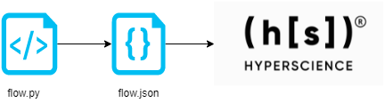
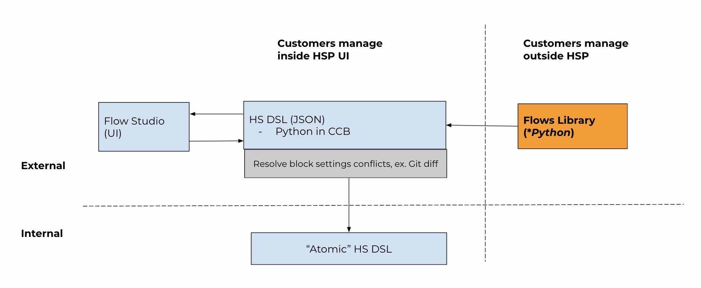

Introduction to Flows SDK
flows_sdk is a library that assists with programmatically defining Flows - sequences of actions managed and executed by the Hyperscience platform.

Flow definitions are first defined as a source using classes from the library. They are then converted to an importable format that can later be deployed on a Hyperscience instance.
The definitions are like blueprints - they configure and wire together Triggers, Blocks and other parameters, while the Hyperscience platform takes care of the execution and lifecycle during the actual runtime.
The code used to build Flows via. the flows_sdk is managed externally from the Hyperscience platform (e.g. in a separate git repository), while the produced artefacts can be uploaded to and managed by the Hyperscience platform.

Prerequisites
Dev: In order to develop Flows using
flows-sdk, the only local requirement ispython 3.7+and a link to this library, provided by your CX representative. Additional dependencies will later be pulled via.pip.Deploy: In order to deploy Flows built using `flows-sdk, you need
a running instance of the Hyperscience platform (
v30and above)a user with permissions to edit and import Flows